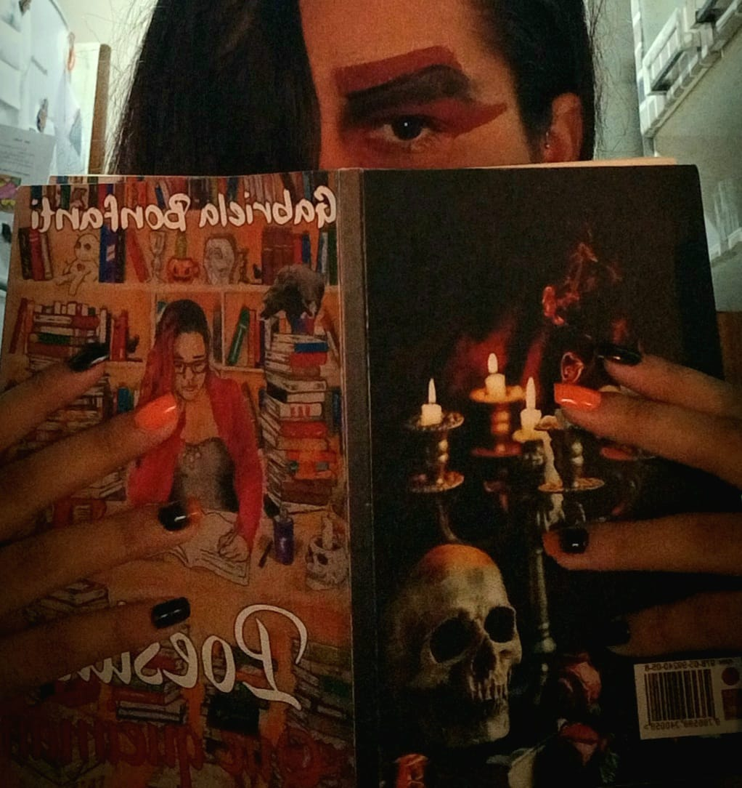

ISSO É MUITA SABEDORIA
Quando fazemos tudo para que nos amem e não conseguimos, resta-nos um último recurso: não fazer mais nada. Por isso, digo, quando não obtivermos o amor, o afeto ou a ternura que havíamos solicitado, melhor será desistirmos e procurar mais adiante os sentimentos que nos negaram. Não fazer esforços inúteis, pois o amor nasce, ou não, espontaneamente, mas nunca por força de imposição. Às vezes, é inútil esforçar-se demais, nada se consegue; outras vezes, nada damos e o amor se rende aos nossos pés. Os sentimentos são sempre uma surpresa. Nunca foram uma caridade mendigada, uma compaixão ou um favor concedido. Quase sempre amamos a quem nos ama mal, e desprezamos quem melhor nos quer. Assim, repito, quando tivermos feito tudo para conseguir um amor, e falhado, resta-nos um só caminho... o de mais nada fazer
 -Clarice Lispector
-Clarice Lispector
Teu falso amor
Eu só queria entender
Por que você partiu,
Eu só queria entender
Por que eu me perdi.
Não consigo lembrar dos teus
Abraços sinceros,
Você me esqueceu tão rápido
E já beija outras bocas
Sem se lembrar da minha.
Parece até que nunca nos
Amamos ,
Na sua cabeça não sei o que
Passa ,
As tuas lembranças não te assustam e
Nem te fazem rasgar até sangrar.
Esse teu amor me destrói
É um falso amor.
Eu só queria entender
Por que você partiu,
Eu só queria entender
Por que eu me perdi.
-Gabriela Bonfanti
Memória
Amar o perdido
deixa confundido
este coração..
Nada pode o olvido
contra o sem sentido
apelo do Não.
As coisas tangíveis
tornam-se insensíveis
à palma da mão
Mas as coisas findas
muito mais que lindas,
essas ficarão.
 -Carlos Drummond deAndrade
-Carlos Drummond deAndrade